The 2017 Tubbs Fire took our home. When I started my data science career in 2020,
fires had to be my first subject. Six years later I came back with an AI collaborator and
rebuilt it end to end: 2.3 million fires, 308 attributes each, an audited
ledger, a tuned and red-teamed model, and every stage published, including the first attempt,
frozen with its flaws.
Portfolio analysis · public data · no API keys · offline after first download · every number machine-checked
1 in 4CA ignitions now on top-decile fire-weather days (was 1 in 13)
0.126test AP, escalation model · 6.0× the base rate
97thTubbs percentile, out of sample, model trained ≤2014
Every number on this page is verified against the
computation by verify_claims.py, and the numbers the review
rounds retired are banned: a stale claim reappearing anywhere is a build failure.
One published claim was retracted, rebuilt honestly, and re-verified.
The whole journey is below.
On October 8, 2017, the Tubbs Fire came over the ridge into Santa Rosa.
By morning our house was a chimney and a set of stone steps.
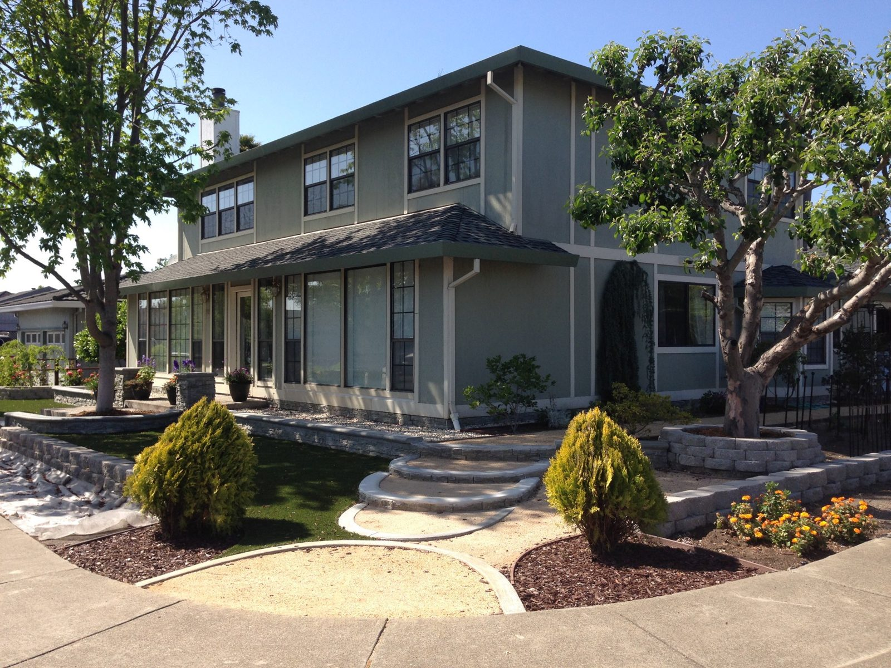
Before. Our home before the Tubbs Fire: stone walls, curved steps, the tree in its round planter.
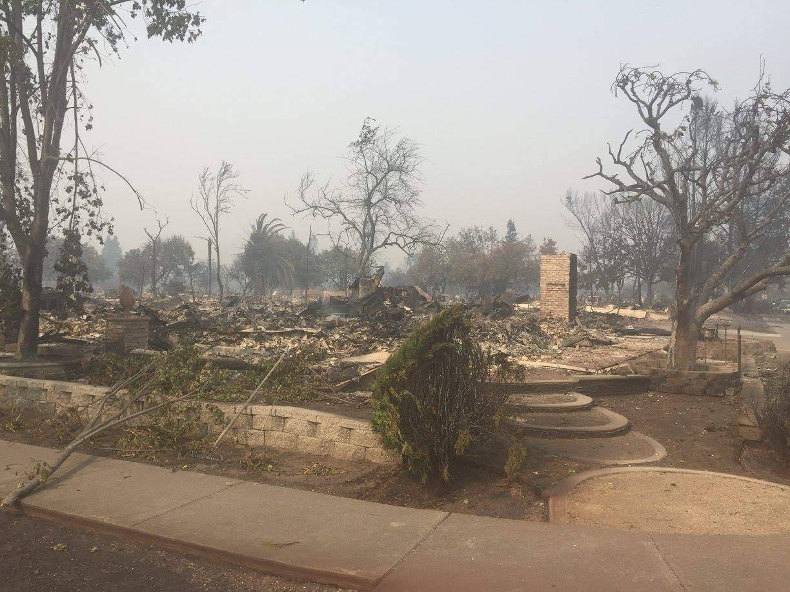
October 2017, days after the fire. The same curved steps. The same stone walls. Everything between them, gone. We lost about 95% of what we owned.
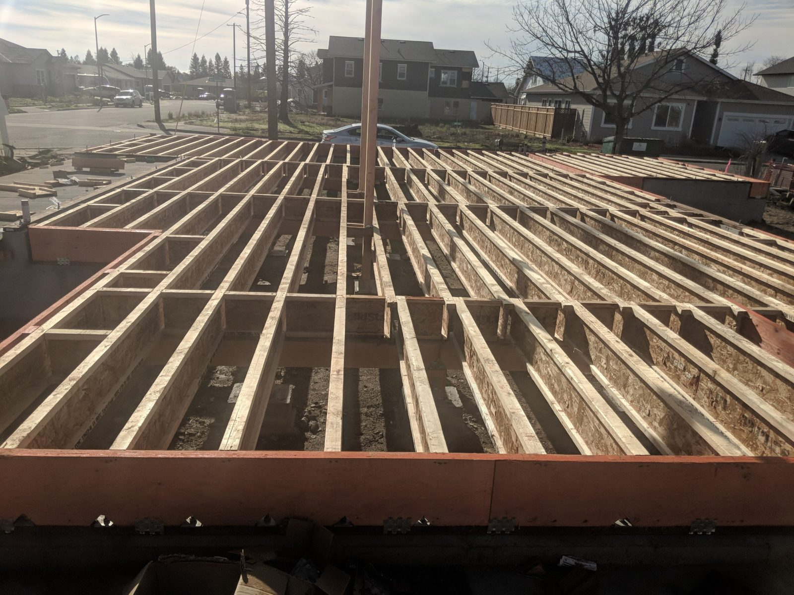
2019, after the fire: the rebuild begins. Floor joists on a new foundation, a neighborhood rebuilding around us.
That fire did not make me a data scientist. I already loved this work, the pull of a question you can actually check. But when I sat down in early 2020 to build my first real
project, at the very start of my career, there was never a question about the subject.
It had to be fires.
I found the biggest wildfire dataset I could: 1.88 million US fires in a SQLite database.
I wrote R by hand. I wrote Python by hand. I made maps, bar charts, a random forest. I published
a three-part series and was proud of it, and I am still proud of it. It is where the work started.
Here is the detail I did not dwell on at the time: that dataset ended in 2015. The fire
that had just burned through my family's life was 22 months past the edge of the data. I was
analyzing 1.88 million fires, and the one that mattered most to me could not, by construction,
be one of them.
The database has since been updated through 2020, and a research team bolted 270 new columns onto every record: the weather at each ignition, the dryness of the fuels, the terrain, the
people nearby. Somewhere in those 2.3 million rows is a row named TUBBS.
We will get to it.
Why this project
This is a return to the same questions with better tools. The 2020 series was beginner work done with care, at the
speed hand-written code allowed. Six years later I can think out loud with an AI collaborator
and watch the analysis keep pace. The subject and the person are the same and the tools are not, which raises the question this project exists to answer: what does a defensible version of my first project look like?
· · ·
02
How this was rebuilt: five rounds, four exhibits
This page is the finished report, but it was not written in one pass. It was built
the way an analysis team works (draft, audit, model, hostile review, final), and every stage shipped as its own page that is still up. Every claim below is meant to be checked rather than taken on trust.
The first shotOne prompt: my 2020 files in, a full 2026 rebuild out, then frozen byte-for-byte, flaws included. The
verifier re-hashes it on every run; if that page ever changes, the build fails.
The data expert's cut2.30M rows cross-examined in
a 29-check streaming audit before any trend was trusted. It caught
47,367 non-CONUS rows hiding in the "CONUS" data, and three first-shot numbers were
corrected in public.
The modeling stageAn operational
escalation-risk model, tuned three ways and calibrated on the era the first shot threw away, plus the retraction of a claim I had published as true.
The red teamA fresh-context hostile reviewer with orders to be
merciless: 35 findings. Four blockers fixed;
everything else amended in print or defended with a number.
The final reportThis page: the survivors. Everything above that
held up, re-keyed to the reviewed numbers, with the superseded ones banned from ever
coming back.
Round
What it shipped
The receipt
1 · First shot
The whole rebuild in one prompt: fetch → reduce → four labs → article → verifier
first_shot.html, byte-frozen; its SHA-256 is recorded and re-checked on every verify run
2 · Data audit
29 checks streamed over 4.68 GB of raw records; a pre-registered cleaning gate that changed 0 rows
data.html · an auto-generated data dictionary · a near-duplicate sidecar the model stage later used
3 · Modeling
The escalation model: three-stack tuning bake-off, spatial-block intervals, calibration, decision curves, and a published claim retracted
modeling.html · every interval bootstrapped · the retraction printed in its own section
4 · Red team
35 findings from a fresh-context adversarial review; the headline re-keyed to a pre-committed system of record; calibration re-selected on the validation era, which changed the answer
Every page swept for numbers the reviews had superseded; the stale ones fixed, then banned
this page · verify_claims.py needles all three pages and fails the build if a retired number reappears
The rule that made it honest
One script is the referee. Every load-bearing number on this page, the audit, and the
modeling stage must appear exactly as the results JSONs print it, or
verify_claims.py exits 1. The frozen first shot is re-hashed on
every run. And since the hostile review, the check runs in both directions: numbers the reviews retired (the old model headline, the broken calibration claim, even a mislabeled photo caption) are banned strings. A stale number reappearing anywhere fails the build.
Why publish the messy middle
The 2020 series shipped as three polished parts with its mistakes baked in, invisible. This
version inverts that: the first attempt is frozen where anyone can read it, the audit that
corrected it is a page, the review that attacked it is a section. The mistakes turned out to be the most useful part of the record. Six years ago that would have felt like
weakness. With a verifier standing behind every number, it is just what the work looks
like.
· · ·
03
TL;DR
Eight bullets, each with a number attached
1 · America is not having more fires. It is having bigger ones. Reported ignitions are
flat-to-noisy (Mann-Kendall p = 0.564 on the CONUS series), while burned area rose
2.4× between the early 1990s and the late 2010s, and fires over 5,000 acres increased by
about +3 per year in the lower 48 (p = 0.027).
2 · The acres live in the giants. Fires of 1,000+ acres are 0.6% of California
ignitions and 92% of California's burned area. Any chart that draws every fire the same size, as my 2020 maps did, hides the entire story.
3 · California's fire calendar is stretching; Florida's is not. CA's season lengthened by
~18 days per decade (147 → 180 days holding the middle 80% of ignitions);
Florida's spring-peak season is stable-to-shrinking. My 2020 self extrapolated one state's
trend to the other. The data says they are different regimes.
4 · Fire weather at ignition shifted where it counts: the extremes. In the 1990s,
1 in 13 CA ignitions happened on a top-decile fire-weather day (local ERC percentile).
In 2006–2020 it was 1 in 4. That is an association consistent with a warming, drying West. This project does not do causal climate attribution, and says so plainly.
5 · Humans light the fires; lightning burns the acres. People start 84.6% of
known-cause fires, but natural ignitions account for 65% of Western burned area.
6 · My 2020 model's 94.7% was mostly a majority class plus memorized coordinates.
Rebuilt faithfully, its celebrated campfire accuracy (96.0%) sits next to a
guess-the-majority baseline of 95.7%. The 2026 cause model (at-ignition features only, tested on years it never saw) scores macro-F1 0.868 against a climatology
baseline of 0.787. And one thing this project published about that model was wrong:
I claimed its probabilities were calibrated. They were not. They were inflated roughly 24×, a Brier skill score of -3.78. The claim is retracted in
the model lab and rebuilt properly in
the modeling stage.
7 · The model, in one line, and what it gets right. Gradient-boosted trees over
86 at-ignition features (fire weather, fuel dryness, terrain, vegetation, human
exposure) estimating the probability that a reported California ignition reaches 100 acres.
Fitted on 1992–2014, then scored on the 2018–2020 fires it had never seen: among
the 1% of ignitions it ranks riskiest, 20.7% escalate past 100 acres, against
2.06% across the era. That is roughly ten times the base rate, and it holds on
a future the model was never shown (ROC-AUC 0.817).
8 · The 2026 escalation model is the piece 2020 never had: operational, calibrated,
and red-teamed. Average precision 0.126 ± 0.0023 across five seeds,
6.0× [4.8–7.5] the base rate, with probabilities calibrated honestly at
last (Brier skill +0.053, fixed on the validation era). The whole thing survived a
35-finding hostile review whose every experiment is published.
And the row exists now. Discovery date 2017-10-08, Napa County,
36,807 acres, minimum humidity 6.3%, ERC above the 90th local percentile. The data caught up
to the story.
· · ·
04
What 2020-me built
Three parts, written by hand at the start of a career: an R/ggplot exploration, a
leaflet map tour, and a scikit-learn random forest. The originals stay online, unedited.
Respect first, because it is deserved. 2020-me picked a hard dataset (1.88M rows in SQLite, not a tutorial CSV) and handled the database boundary correctly, closing
connections and explaining why. Every figure got a paragraph of interpretation; nothing was
dumped and abandoned. The maps used a proper Albers equal-area projection, which plenty of
working analysts skip. And buried in Part III is one sentence of real instinct:
"I am going to drop a lot of the variables that are known after the fire. I want to see if we
can predict the cause of fire by just the Latitude, Longitude, Month, year, and day of week."
That is leakage awareness, unprompted, self-taught, in 2020. The instinct was right. It was not applied everywhere, and the features it trusted were quietly broken. Which brings us to
the bug.
The bug that ate two features
Part III's notebook says, in prose: "DISCOVERY_DATE variable is in the Julian Date format.
I want to convert this variable to Gregorian dates." The very next cell runs:
pd.to_datetime read those Julian day numbers (~2,453,000) as
nanoseconds since 1970. Every fire in the dataset became January 1, 1970, a Thursday.
MONTH was 1 for every row; DAY_OF_WEEK was 3 for every row. Two of the five features feeding
every model were constants, and nothing errored. The fix was one argument:
pd.to_datetime(col, unit="D", origin="julian"). The stated intent sat
one cell above the code that betrayed it.
The other 2020 problems, briefly and specifically:
The headline conclusion outran the analysis. "It does seem climate change is a strong
cause of this" rested on one straight trend line through raw annual counts. No climate variable existed anywhere in the data, and (as we will see) raw counts partly measure paperwork.
The 94.7% was never questioned. A random 70/30 split let the model memorize
coordinates; campfires were rare enough that guessing "not campfire" scored ~93%. Two other
models landed on exactly 0.9000 and the notebook celebrated rather than squinted.
Model 1 leaked. Predicting cause with FIRE_SIZE and containment dates in the feature
set is using the aftermath to predict the beginning.
Every fire was the same dot. A 1,200-acre fire and a 300,000-acre fire rendered
identically on every map.
The Florida section had a header, a figure, and zero sentences. It gets its words
this time.
None of this is disqualifying for a first project. It is a starting line. The rest of this page
is the same questions, asked the way I would ask them now.
· · ·
05
The data, upgraded
Same national fire registry, two major versions later, plus 270 new columns of
physics, fuels, terrain, and people attached to every single fire.
The backbone is the Fire Program Analysis Fire-Occurrence Database (FPA-FOD), the
interagency registry of every reported wildfire in the US. My 2020 project used its 2015 edition
via Kaggle. The current 6th edition runs 1992–2020 with 2.3 million fires. On top of it,
the FPA FOD-Attributes dataset (Pourmohamad et al., 2024; Zenodo
10.5281/zenodo.8381129, CC-BY) attaches ~270
attributes to each record: gridMET fire weather on the discovery day (temperature, humidity,
wind, vapor-pressure deficit, ERC), 5-day antecedent windows, local climatological percentiles,
NDVI and land cover, elevation/slope/aspect, population, social-vulnerability indices, distances
to fire stations. It is 29 annual CSVs, 4.68 GB raw, 308 columns wide.
Download once29 per-year CSVs from Zenodo, md5-verified, resumable. The 5 GB blob variant is skipped on purpose.
Discover columnsEvery curated column is verified present in every year file before any row is read. Missing → loud failure, not a guess.
Stream-reduce250k-row chunks → curated columns → small caches (~33 MB total, 85 columns since cache v2). Runs offline forever after.
Lock with hashesEvery cache is SHA-256-manifested. Silent drift fails loud, a lesson the 1970 bug taught for free.
Assert the bug awayParsed dates must span 12 months and 7 weekdays and match FIRE_YEAR. The 2020 degeneracy is now a crash, not a surprise.
Technical
The reducer re-derives month, weekday, and a leap-safe day-of-year from properly parsed dates
(checked: 12/12 months, 7/7 weekdays, year-mismatch 0.0017%). If DISCOVERY_DATE ever arrives
as Julian day numbers again, the pipeline applies
pd.to_datetime(col, unit="D", origin="julian"), the one-argument fix, and still runs the assertions. Sentinel values (-9999) become NaN. The full resolved
column mapping ships in data/reduce_report.json.
The 2021–2025 extension. FPA-FOD ends in 2020, which would leave this rebuild six years
behind the present. For the large-fire context series only, I pull annual aggregates (counts and
acres of 1,000+ acre wildfires) from NIFC's WFIGS perimeter service. It is a different reporting
system with different completeness, so it is drawn as a dashed, visibly separate segment, never
mixed into the models, and never used for trend tests across the seam.
Honest scope notes (corrected by the Round-2 audit): I originally wrote here that Alaska
and Hawaii were absent from this dataset. The data audit proved that wrong. Their fire records are present (AK: 15,195 fires and 36.65M acres; HI: 9,970; PR: 22,202); what's
absent is their attributes (weather is empty, terrain carries a 32767 nodata fill). All
"CONUS" series on this page now genuinely exclude AK/HI/PR. Cause is missing or undetermined
for 8.4% of fires nationally, and for 30.8% of California-plus-Florida fires, which
constrains every cause model downstream.
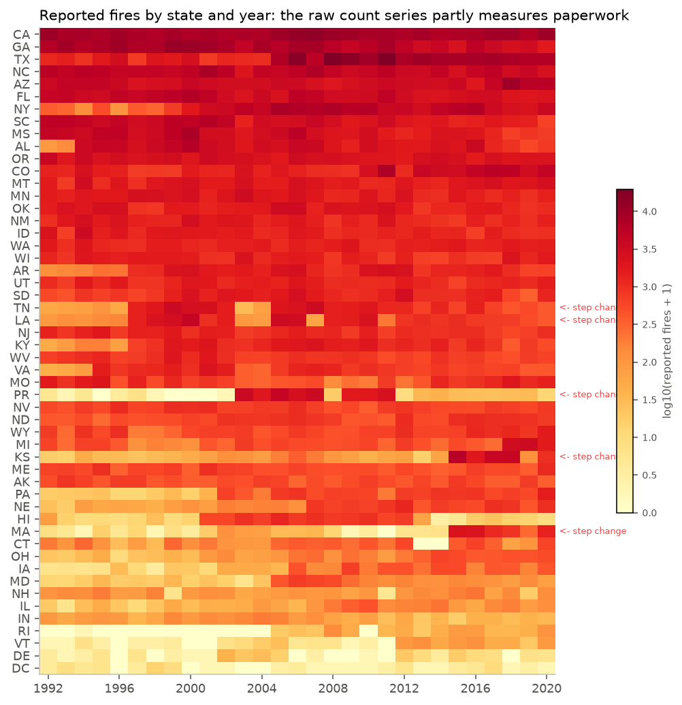
The raw count series partly measures paperwork. Reported fires by state and year. The flagged rows show the problem: several states' counts jump or collapse in
single years (TN, LA, PR, KS, MA), which is reporting-system change, not fire behaviour. This
is why the headline trends are restricted to large fires, where reporting has always been
complete, and why the step-change states get a sensitivity test.
The table itself got a full forensic cross-examination in Round 2, a 29-check streaming audit covering missingness geography, duplicate candidates, coordinate microscopy, and the
cause-label mystery: The Data Expert's Cut.
· · ·
06
The full look
Part I's job, done the 2026 way: before any model exists, characterize what the table actually delivers, including what is missing, and where the registry itself changes shape.
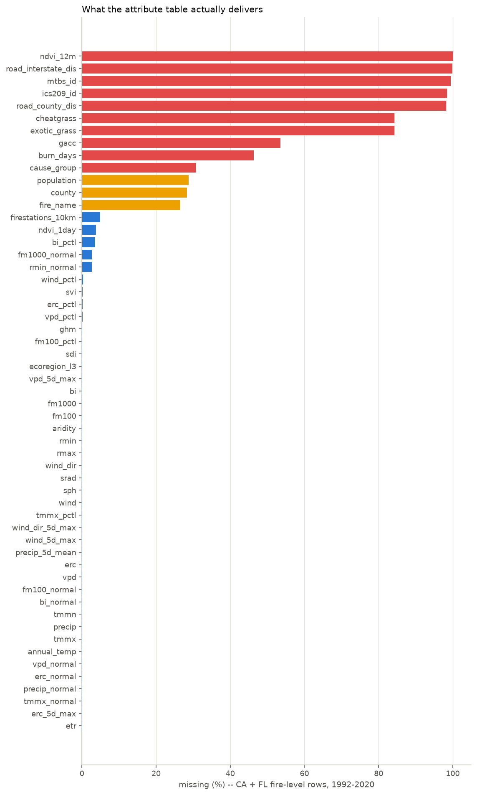
Trust, but verify the columns. Three advertised attributes are effectively dead in CA/FL
(12-month NDVI 100% missing; both road-distance columns >98%) and were dropped from all models.
Weather attributes are near-complete (<0.1% missing). Cause is the big honest gap: 30.8% of
CA+FL fires have no usable cause label.
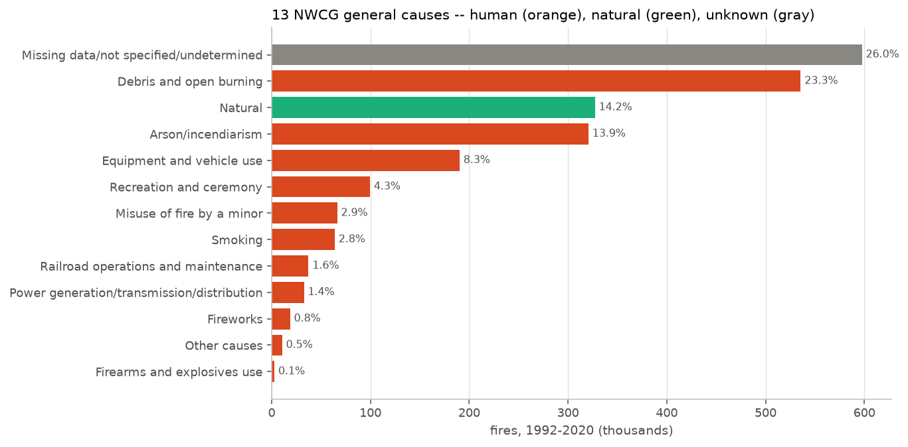
The taxonomy changed under the project. The 2015-era 13 causes (Campfire, Children,
Powerline...) were retired for NWCG's classification. Debris burning leads, lightning is the
only natural cause, and "missing/undetermined" is large enough that any cause model must
report what it excluded.
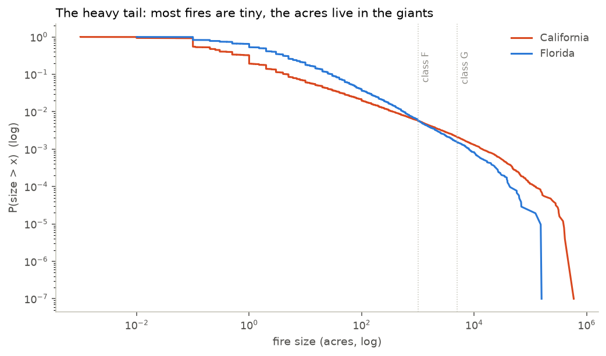
The heavy tail carries the entire result. Straight-ish lines on log-log axes across five
orders of magnitude. Large fires (1,000+ acres) are 0.6% of CA ignitions, and 92% of CA burned acres (71% in FL). This single chart indicts every equal-dot map I made in 2020.
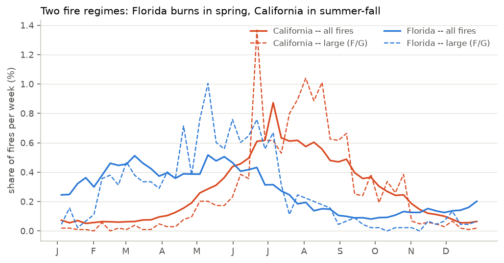
Two states, two calendars. Florida burns in spring (May peak); California peaks in
July–August, and its large fires skew later into the fall wind season. This two-regime
structure is why extrapolating CA conclusions to FL failed in 2020.
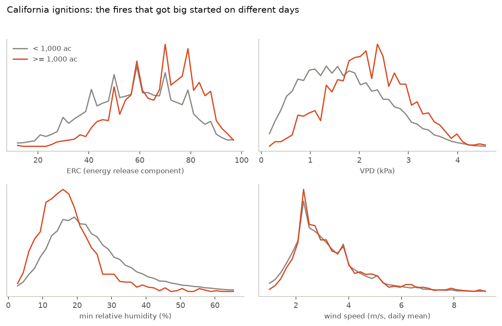
The fires that got big started on different days. Drier fuels (ERC
shifted right), thirstier air (VPD shifted right), lower minimum humidity. And one telling
exception: the daily-mean wind distributions are nearly identical, because the wind
that drives catastrophic fires blows in gusts and at night, which a daily average cannot see.
That blind spot returns as a measured limitation in
the modeling stage.
Plain English
Before asking "are fires increasing?", we checked what the ledger can honestly answer. The
weather physics attached to each fire is nearly complete and trustworthy. The cause labels are
good but gappy. And the number of reported small fires depends partly on who was doing
the reporting in a given state and year, which is where 2020-me got burned.
· · ·
07
Six bets, placed before the verdicts
Each hypothesis was written down with a decision rule; the lab fills in the verdict
chips from trend_lab_results.json. Not all of them survived, including two claims 2020-me treated as obvious.
H1 · "Wildfires are increasing in the US"
2020's framing premise, tested on counts and burned area.
SPLIT
Ignition counts: flat (MK p=0.564). Burned area: up 2.4×. More fire, not more fires.
H2 · The West is burning bigger
Burned area and large-fire activity across 11 Western states.
CONFIRMED
West acres up (MK p=0.018); 5,000+ acre fires up +3.1/yr in the lower 48 (p=0.027); West large-fire counts up in the panel model (IRR 1.14/decade, p=0.007).
H3 · CA ignitions on increasingly extreme fire-weather days
Association rather than attribution, measured at the extremes.
H6 · "Large fires are increasing everywhere, including Florida"
2020's extrapolation from California to Florida.
REJECTED
FL large-fire trend: IRR 0.99/decade (CI 0.72–1.36), MK p=0.612. Florida is a different fire regime.
Why bets
Writing hypotheses before results is cheap insurance against narrating whatever the charts
happen to show. Two rules were revised once, on principle, after the first run. That story is told openly in the defense section, because it is exactly the kind of
thing a skeptical reviewer should get to see.
· · ·
08
California: not more fires, more fire
The state's large-fire count trend is statistically unremarkable. Everything
else about its fire behavior changed.
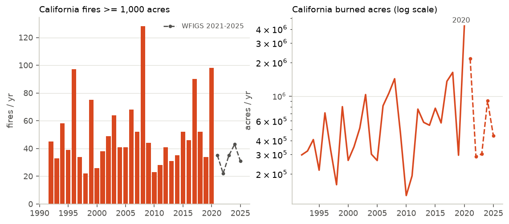
Counts stay flat and noisy; acres rise sharply. Left: CA fires ≥1,000 acres per year (IRR 1.07/decade,
CI 0.89–1.29, not a significant count trend), with the 2021–2025 WFIGS series dashed and
separate. Right: burned acres on a log scale. 2020 alone burned 4.27M acres, and the
Theil-Sen slope is +21k acres/yr (MK p=0.018).
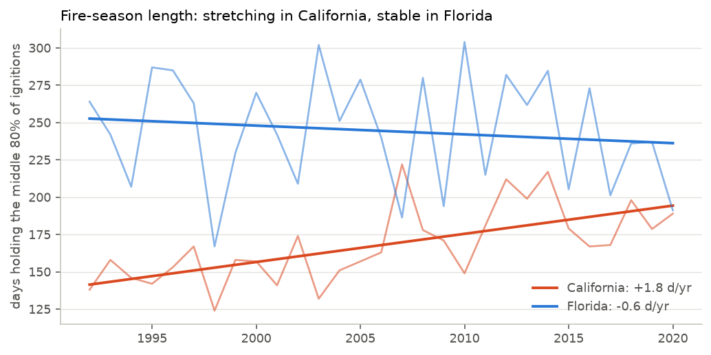
The stretching calendar. The window holding the middle 80% of CA ignitions grew from
~147 days (early 1990s) to ~180 days (late 2010s): +17.8 days per decade (MK p=0.0002).
Florida, plotted on the same axes, drifts the other way.
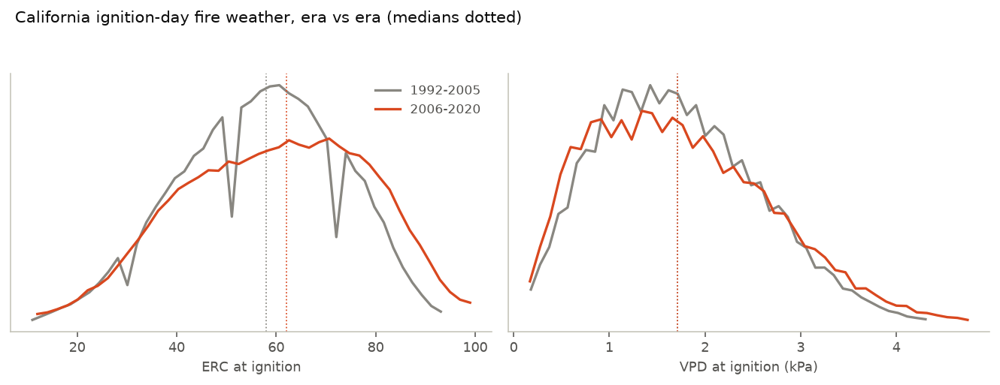
The extremes moved; the middle mostly didn't. ERC at ignition shifted right (median
58 → 62) and the top-decile share nearly quadrupled, while the VPD median barely moved.
ERC integrates weeks of fuel drying, a measure of drought memory, which is what California's
2012–2020 stretch supplied.
Plain English
Think of it this way: California is not getting struck by more matches. The matches are
landing on a landscape that spends far more of the year ready to burn, and when one lands on the wrong autumn day, wind does the rest. That is the story the next section's map tells.
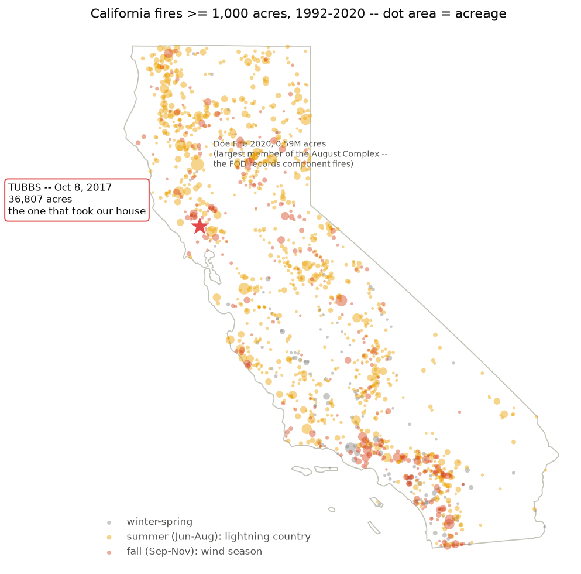
Every dot's area is its acreage, the fix my 2020 maps needed. Summer lightning fires
(gold) fill the Sierra and the north; the fall wind season (orange-red) hugs the coast ranges
and Southern California. Fall fires are 21% of CA's large fires but 26% of their acres, and
they are the ones that reach towns. The star is Tubbs. The Doe Fire annotation is a data
detail worth knowing: the FOD records the August Complex as its component fires.
· · ·
09
The row
FOD_ID 400015986. In 2020 this record did not exist to be found. Here is what the
database now holds for the night everything burned.
Field
Value
What it means
FIRE_NAME
TUBBS
one row among 2,302,521
DISCOVERY_DATE
2017-10-08
day 281, deep in the wind season
FIRE_SIZE
36,807 acres
class G; 20 days to containment
ignition point
38.60895, −122.62879
Napa County, near Calistoga; it crossed into Sonoma and came down on Santa Rosa
NWCG cause
Human / undetermined
see note below
rmin
6.3%
minimum relative humidity that day, desert-dry air in wine country
vpd
2.22 kPa
vapor-pressure deficit far above the CA ignition median (1.71)
erc / percentile
77 · >90%
energy-release component in the top decile of that location's own climatology
tmmx
86°F
a warm day, not a heat record; the drivers were dryness and wind
wind (daily mean)
6.0 m/s
gridMET is a daily 4-km average; the Diablo gusts that night ran far higher, and the row cannot see them
Read the weather columns again. Bone-dry air, fuels at a top-decile energy state, and a wind
field the daily average can only hint at. The row is the Diablo-wind signature written into a database, the same pattern the seasonal map shows for nearly every autumn disaster on the
California coast ranges.
On the cause field
The database says Human / undetermined. CAL FIRE's 2019 investigation attributed the ignition
to a private electrical system beside a residence, consistent with "human" and never resolved to
a specific NWCG category in this registry. My 2020 writeup once garbled this into a sentence
about lightning. The record, and the correction, both stand here.
What the 2026 model says about that morning
The escalation model from the modeling stage is trained only on fires through 2014, so Tubbs is out of sample by three years. Ranked against the 50,915
California ignitions that are as out-of-sample as it is, the model puts the Tubbs Fire's
ignition conditions at the 97th percentile, with a calibrated escalation risk of
9.4% against a 2.1% base rate: on paper, one of the most dangerous ignition days it
was ever asked to score. The limitation is what it missed: the daily-mean wind column reads calm, because the Diablo event was a nighttime, hours-long phenomenon a
daily average cannot see. The model ranks Tubbs on fuel dryness alone and still puts it near
the top. The full scoring, and the limitation, are quantified
there.
You can print this row yourself, offline, in one command:
python examples/find_tubbs.py.
· · ·
10
Florida, which finally gets its paragraphs
In 2020 the Florida section was a header and an unexamined image. It deserved
better: Florida is the clearest counterexample to every "fires are exploding everywhere" take.
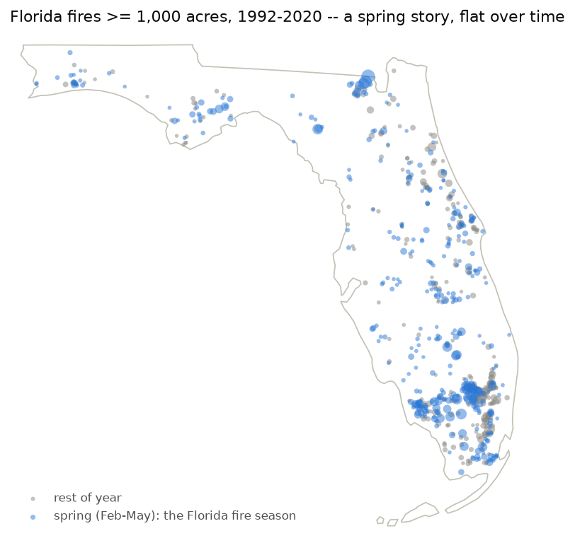
A spring story, flat over time. 57% of Florida's 640 large fires ignite February–May,
between the dry season's end and the summer rains, concentrated in the interior flatwoods and
the Everglades margins.
Florida burns constantly and on purpose: it runs one of the country's largest prescribed-burn
programs, and its ecosystems are built to burn frequently and lightly. Its large-fire count
trend over 29 years is a flat line (IRR 0.99/decade, MK p=0.612); its burned-area trend is
indistinguishable from noise (MK p=0.468); and its fire season, if anything, contracted
(257 → 228 days era-over-era, not significant).
So H6, the 2020 claim that large wildfires were rising "across the U.S. and across California
and Florida", is rejected. The rejection carries the finding: the American fire problem is not a uniform national trend. It is a Western drying story, and Florida's stability is the
control group that proves the point.
· · ·
11
The national picture, with the paperwork removed
2020-me fit one line through national counts and read climate into it. The honest
version has to separate physics from reporting first.
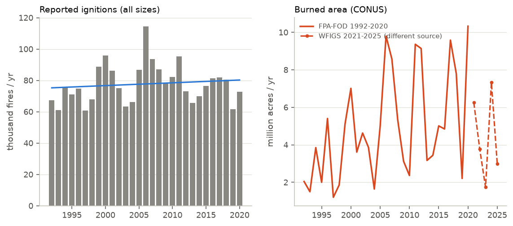
The claim 2020-me should have made. Left: reported ignitions, flat-to-noisy.
Right: burned area, from ~3.0M acres/yr (1992–96) to ~7.0M (2016–20), with 2021–2025
dashed from a different source and not used in any test. True lower-48 series: the Round-2
data audit found AK/HI/PR records hiding in the "CONUS" dataset and they are excluded here.
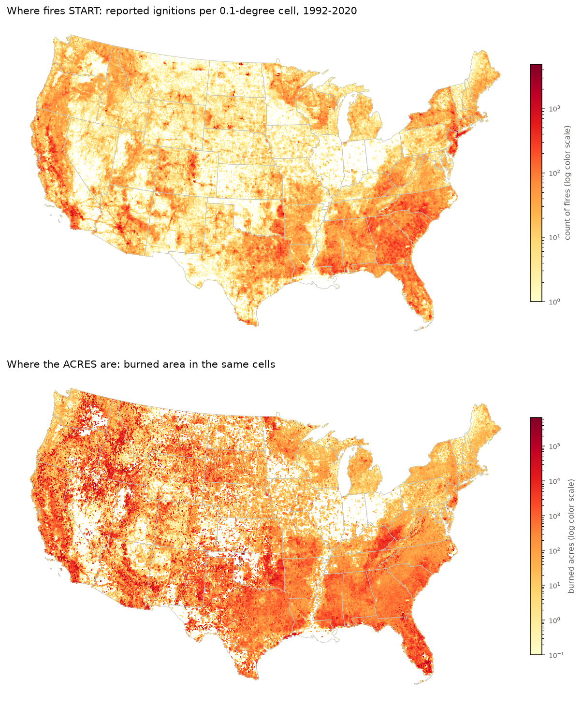
Where fires start vs where the acres are. By count, the Southeast dominates, a dense sequence of small human ignitions. By acreage, the map inverts and the interior West
lights up. Same cells and same projection, opposite stories: the count/consequence distinction
my 2020 choropleths could not draw.
Data detail that mattered
The state-level panel model says ignition counts rose (+24%/decade) while the CONUS summed
series says flat (MK p=0.564). Both are computing honestly. The panel is dominated by states whose reporting grew. Massachusetts, Kansas, Louisiana, and Tennessee show
step-changes of 40–300× in year-over-year reported counts; Puerto Rico's series is so
discontinuous it is excluded from every national figure on this page. A trend you can flip by
changing which paperwork you count is not a physical trend.
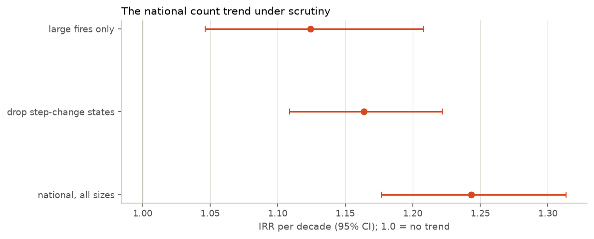
The same trend, three ways of counting. The national all-sizes trend is the
biggest and the most reporting-contaminated; drop the step-change states and it shrinks;
restrict to large fires, the series reporting cannot inflate, and it shrinks again. The ordering is the finding: the more paperwork you remove, the smaller the
"increase" gets.
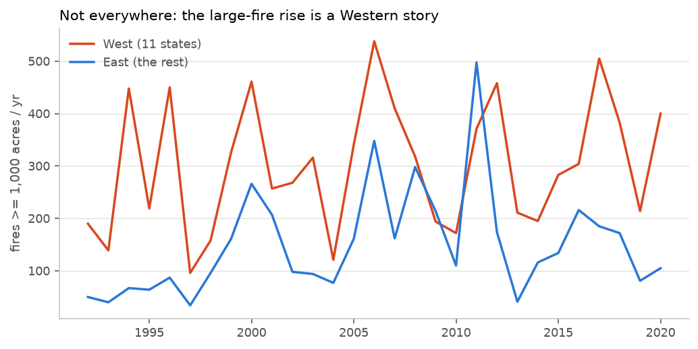
Not everywhere: the large-fire rise is a Western story. West (11 states)
against everywhere else, fires ≥1,000 acres per year. The West carries both the level and the growth, which is why extrapolating national claims to Florida failed
(and gets its own section).
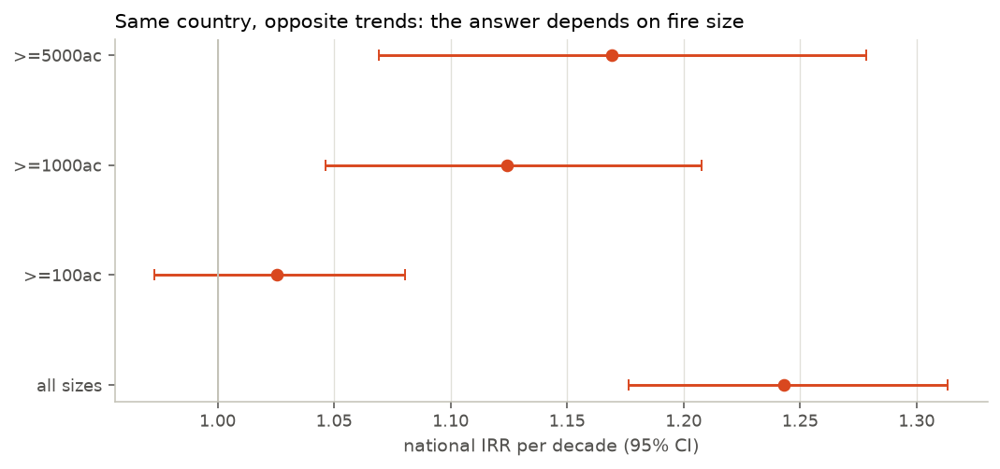
Same country, opposite answers by size class. The national count trend is large and
positive for all sizes (reporting-sensitive), shrinks as the size floor rises, and what remains at 5,000+ acres, where reporting has always been complete, is the physical signal: about
+3.1 giant fires per year (p=0.027).
The 2021–2025 extension adds current-events context without contaminating the statistics: the
WFIGS years include the quiet 2022–2023 lull and the ferocious 2024; January 2025's Los Angeles
fires (Palisades, Eaton) barely register in acres, and were among the costliest disasters
in state history, a reminder this page returns to in Limits: burned area is
not damage.
· · ·
12
The model lab: a museum piece and an honest machine
First rebuild the 2020 random forest exactly as it was (dead features, leaked outcome, random split), then sit it next to models evaluated the way 2026 requires.
The museum piece
Faithfully reconstructed on 1992–2015 California large fires (the old 13 cause classes
approximated from NWCG's new taxonomy): the same RandomForest settings, the same random 70/30
split, MONTH pinned to 1 and DAY_OF_WEEK to Thursday exactly as the Julian bug left them, and
FIRE_SIZE left in the features exactly as the leak allowed. It scores
49.4% on the 13-class task (the 2020 notebook reported 61.3%) and
96.0% on the celebrated campfire binary (2020: 94.7%), against a guess-the-majority baseline of 95.7%. Re-scored under a temporal split, the
13-class museum model's macro-F1 is 0.14.
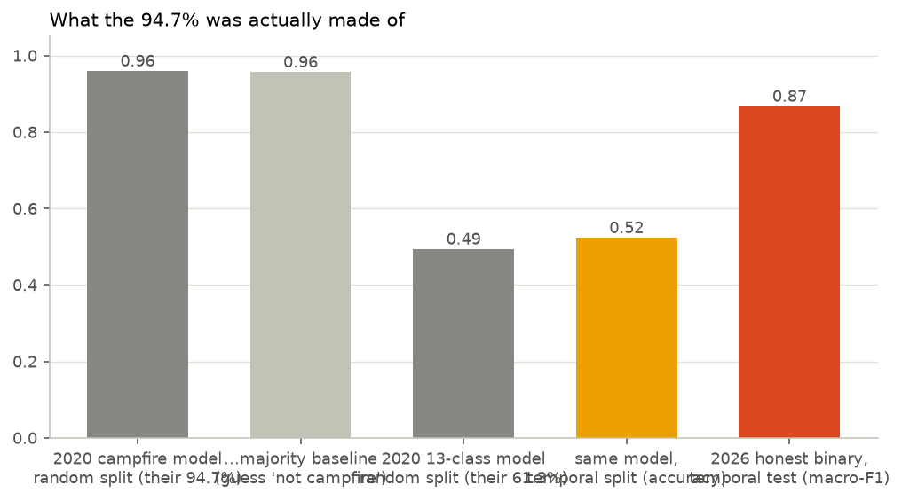
What the 94.7% was actually made of. Mostly prevalence, plus coordinates the random
split let the forest memorize. The honest bar is a different metric on a harder question.
The honest machine
Gradient boosting (scikit-learn's HistGradientBoosting, which handles missing values and categoricals natively with no extra dependencies) on at-ignition features only: location, calendar
(computed correctly this time), the fire weather of the day, fuel moisture, vegetation, terrain,
and human presence. Named and excluded: FIRE_SIZE, size class, containment anything, agency, owner. If it is not knowable at ignition, it is not a feature. Cause labels are missing for
15.2% of CA fires overall, but not evenly: the Round-2 review found the exclusion
is 10.1% in the training era and 41.7% in the 2018–2020 test era, because
California's cause-labeling collapsed over time (see the data
audit). Test-era scores are therefore measured on the shrinking subset of fires the state still labels, a selection caveat reported rather than hidden.
Protocol: train ≤2014, validate 2015–2017, test 2018–2020. The model never sees the era containing Tubbs. Inside the training era, 5-fold spatial-block cross-validation
(1°×1° blocks) checks that scores survive when nearby fires can't leak across folds.
Three baselines every model must beat: majority class, a groupby climatology (majority cause per
0.2° cell × month), and a linear model.
Task
Test macro-F1
Climatology
Majority
Extras
T1 · Natural vs Human (CA)
0.868
0.787
0.474
PR-AUC 0.852
T1 · Natural vs Human (FL)
0.839
0.793
0.449
different regime, same protocol
T2 · 7-class cause (CA)
0.430
0.336
0.049
confusion matrix below
T3 · P(reaches 100+ acres) (CA)
0.539
0.500
0.495
PR-AUC 0.121 vs 0.021 prevalence floor (5.9× lift) · Brier 0.096; see the retraction below; superseded by the modeling stage's system of record
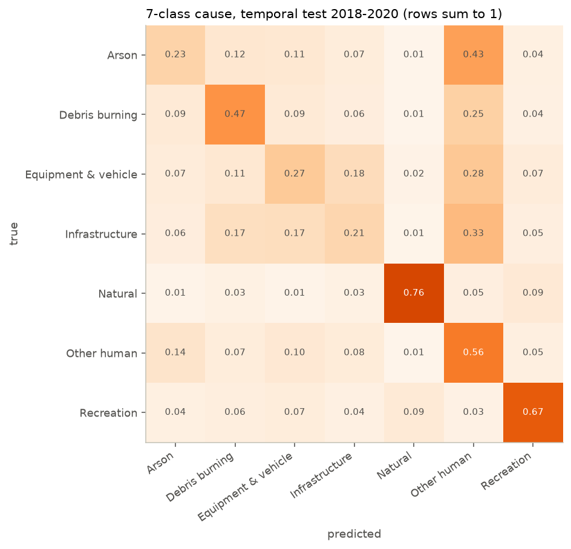
Where cause prediction is honest about its limits. Lightning separates cleanly from
people (weather and terrain give it away). Distinguishing arson from debris burning from equipment (different humans with different matches) is where the signal thins, as the 2020 notebook's 61.3% (leaks and all) should have hinted.
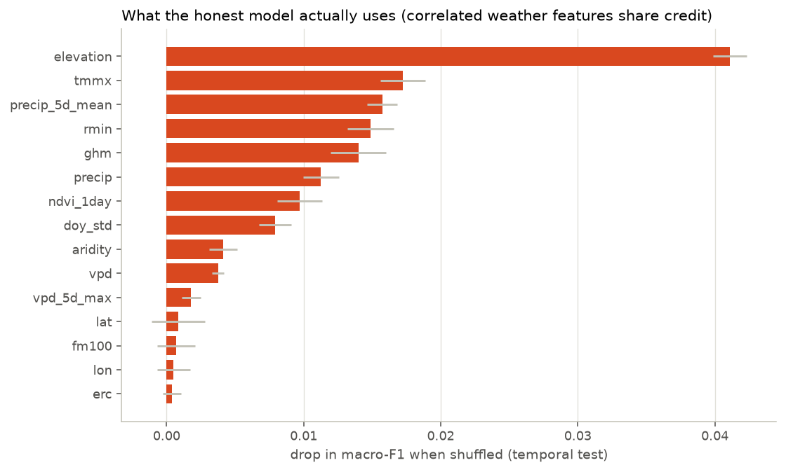
What the model actually uses. Location and calendar carry cause separation; fire
weather and fuel moisture matter and share credit (ERC, its 5-day maximum, and fuel moistures
are correlated at |r| > 0.87, so importance spreads among them).
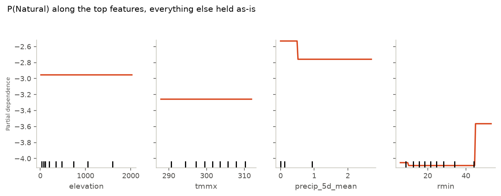
Directions a fire scientist would recognize. P(Natural) climbs with elevation and
summer timing and falls with human presence, recovered from data alone.
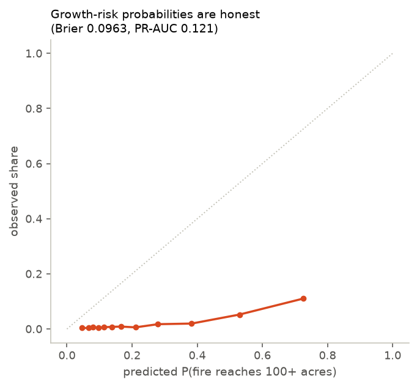
This figure was published with a false caption. It originally read "when the model
says 12%, about 12% do." That is not true of this model, and the correction is in the callout
below.
Retracted · the number I got backwards
The growth-risk model above ranks fires well and its probabilities are not calibrated.
Its Brier skill score is −3.78, meaning its Brier error is 4.8× that
of simply forecasting the base rate for every fire, because class_weight="balanced" tells the model that escalations are as
common as non-escalations, so it emits probabilities near 0.5 on a problem whose true rate is
2%. I read the shape of the reliability curve and never computed its skill.
The modeling stage retracts this properly, shows that
removing the class weighting fixes most of it at the source, and rebuilds the model as
something you could actually put in front of a duty officer.
The 2026 operational model, the piece 2020 never had
The cause lab above answers a scientist's question. The
modeling stage asks the one a duty officer has: of the
ignitions reported, which few will become something? Its label is clean where cause is drifting (fire size is essentially never missing), and its protocol was fixed
before any model ran: train ≤2014, calibrate on 2015–2017, test on 2018–2020,
spatial-block CV inside the training era, test-set selection gated in code.
The zoo, with intervals. The system of record, a tuned HistGradientBoosting model committed to before test scoring, reaches test average precision 0.126 ± 0.0023 across five seeds, 6.0×
[4.8–7.5] the 2.06% base rate; in the top 1% of ignitions by risk, 20.7%
escalate. LightGBM's 0.131 is the best single test score, reported, not selected, for reasons the red team spells out. Its probabilities
are calibrated the honest way now: Brier skill +0.053, map chosen on the validation
era.The leak that looks like innocent metadata. Honest features score 0.124.
Adding only the existence of an MTBS identifier, a join key to a burn-severity programme that only maps big fires, takes it to 0.435. Neither column is named
fire_size; both are banned by name, and a three-criteria tripwire now screens every raw
column before any model sees it.
And because a stakeholder would ask: leaving the freak 2020 season out entirely, the pooled
test score is 0.106, printed rather than buried; the model keeps 3.5× lift even in
the emptiest population tercile, so it is not a remoteness lookup; and transferred to Florida
it drops to 0.180 against 0.293 for a Florida-native model. It learned California, and says so. Every one of those numbers comes from
the 35-finding hostile review, which is its own
exhibit.
Is it overfit, and can it predict fires before they start?
Two questions worth answering directly. On the first, the model was scored on all three
eras: average precision 0.538 on the training years it fitted, 0.099 on the
2015–2017 validation era, 0.124 on the 2018–2020 test era. The in-sample
gap is large, which is what a 360-tree ensemble does with 200,967 rows, and it is why no
score in this project is ever quoted from the training era. The part that matters is that
the two held-out eras agree with each other: ROC-AUC 0.813 and 0.817, with
the later, more distant era scoring slightly higher. Skill that decayed with distance from
training would look different. Refit on shuffled labels, the same pipeline collapses to
AP 0.0232 against a 0.0206 base rate, so the ranking is not an artifact of the
evaluation code.
That 0.817 ROC-AUC deserves a caveat rather than a victory lap. Between the training era
and the test era, ROC-AUC falls 14% while average precision falls 77%. On a 2% problem,
ROC-AUC is dominated by the 97.9% of easy negatives and reads far more forgiving than the
metric that governs a real response budget.
On the second question the answer is no, for a structural reason. This model estimates the
probability that a reported fire escalates. Predicting ignition itself needs the
places and days where nothing burned, and those rows exist in no cache here: 740
fire-prone 0.25° California cells across 10,593 days give 7.8 million cell-days, of
which the data holds 251,882. The missing 7.6 million are the negative class an
ignition model would need, and there is no gridded daily weather with which to describe
them. The full accounting is in the modeling stage.
The 2020 sins, re-run on purpose
Every evaluation shortcut from Part III re-run as a controlled experiment (figure below), and the result is more interesting than the script I expected. On a leakage-free feature set
the shortcuts barely matter: random CV 0.888, spatial CV 0.871, temporal test 0.868, and
re-adding the leaked FIRE_SIZE moves the binary task by just +0.003. The damage lives where
2020 actually lived: the museum's 13-class model falls from 0.494 (random split) to
0.14 macro-F1 under a temporal split, and its campfire trick was pure prevalence.
Protocol-robustness is a property good features buy you. The shuffled-label null (0.376,
against 0.868 real) proves the pipeline still knows how to fail when it should.
The modeling stage builds a probe that does bite.
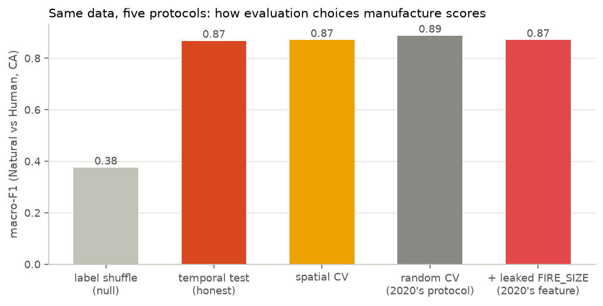
Five protocols, one dataset. Scores are manufactured by evaluation choices long before
they are earned by models. 2020-me lived three bars to the right of honest.
· · ·
13
Defend it
Every headline claim on this page, against the strongest objection I could aim at
it. Objections that partially land are conceded, in print.
Objection
Answer
Status
"Your count trends are reporting artifacts."
Agreed. That is a finding rather than a flaw. Headline claims live in the ≥1,000-acre stratum
where reporting is complete; the threshold ladder shows the flip; PR and four step-change
states are excluded or sensitivity-tested; the panel-vs-sum divergence is displayed, not
hidden.
handled
"The 95th-percentile fire size fell. Doesn't that contradict 'bigger fires'?"
The naive p95 across all reported fires declines because small-fire reporting grew,
diluting the distribution. Size-floor-fixed measures, counts of 5,000+ acre fires (+3.1/yr, p=0.027) and total acres (2.4×), are the reliable instruments. The trap is
documented so the next person doesn't step in it.
handled
"You changed your hypothesis rules after seeing results."
Once, disclosed: H1 was re-scoped from counts-only to counts+area (it is an activity
claim) and H3 from medians to the top-decile share (it is an extremes claim). The
numbers never moved; the rules were made faithful to the claims' plain meaning. v1 rules
and the revision note ship in the results JSON.
conceded & disclosed
"The ERC percentile shift could be an encoding artifact."
Checked: the label vocabulary is identical across eras, and raw ERC values inside the
>90% label are consistent (median 72 early, 75 late). The month-mix shift is far too
small to produce a 3.6× tail change.
It is drawn dashed, labeled as a different system, restricted to like-for-like
≥1,000-acre series, and used in zero statistical tests. The WFIGS years also sit
lower than 2016–2020 FPA years, partly source completeness and partly the quiet 2022–23, which is why no cross-seam claim appears anywhere on this page.
handled
"The old-13-class museum comparison uses an approximate crosswalk."
Correct, and unavoidable: the taxonomy was retired. The crosswalk is printed in the
code, marked approximate everywhere it appears, and the museum's headline punchline
(majority baseline ≈ celebrated accuracy) survives any reasonable mapping.
conceded & bounded
"Cause labels are missing for a third of CA fires, so your cause models are biased."
The exclusion share is reported next to every result; undetermined causes skew toward
exactly the hard human-vs-human distinctions the confusion matrix already flags as weak.
Claims are scoped to known-cause fires, explicitly.
conceded & scoped
"Could the pipeline itself be broken?"
The label-shuffle null collapses to 0.376 (chance), the spatial-block and
temporal protocols behave as theory predicts, dates are asserted to span 12 months and 7
weekdays (the 2020 failure mode is now a crash), and every cache is hash-locked with
verify_claims.py needling every number on all three pages
against the results JSONs, and banning the numbers the reviews retired.
handled
"Your model headline was picked by looking at the test set." (red team)
It was. Round 3's champion was a max over nine test scores. Fixed by re-keying
to the pre-committed system of record (its margin to the max is inside FDR control at
q=0.085), and the winner's-curse procedure is documented as a caught finding.
conceded & fixed
"Your calibration map was chosen on test data." (red team)
It was. Re-selected on the validation era, which chose a different map, and every decision number was recomputed under the clean
choice (Brier skill +0.053).
conceded & fixed
"Your test era is just the freak 2020 season." (red team)
2020 supplies 49% of the test positives. Leave it out entirely and the pooled score is 0.106, printed in the report so nobody has to ask.
handled
"CV said 0.27, test says 0.13. That's overfitting." (red team)
A change of denominator, not a loss of skill: the search ran at a 7.3% base rate, the
test era at 2.06%, and average precision scales with prevalence. Normalized, the model
scores 3.7× chance in CV and 6.0× on test, relatively better out of sample.
handled
The full adversarial review (35 findings, the four blockers, and every experiment it demanded) is published as
its own section of the modeling stage.
· · ·
14
Scoreboard
Six bets on the science, two on the craft. One number each.
Bet
Verdict
The number
H1 · US wildfires increasing
SPLIT
counts MK p=0.564; acres 2.4×
H2 · West burning bigger
CONFIRMED
+3.1 giant fires/yr, lower 48 (p=0.027); West acres up (p=0.018)
H3 · Extreme-weather ignitions rising (CA)
CONFIRMED
top-decile share 7.7% → 28.2%
H4 · Humans start most fires
SPLIT
84.6% of ignitions; 65.4% of Western burned acres are lightning-started
H5 · Season lengthening
SPLIT
CA +17.8 d/decade (p=0.0002); FL n.s.
H6 · "Everywhere, including Florida"
REJECTED
FL IRR 0.99/decade, p=0.612
The escalation model · operational, calibrated, red-teamed
SHIPPED
test AP 0.126 ± 0.0023 · 6.0× base rate · 20.7% precision at 1%
Round 1's calibration claim · "when it says 12%, about 12% do"
RETRACTED
Brier skill −3.78 as published → rebuilt at +0.053 on the validation era
· · ·
15
Six years later
What the beginner got right, what the rebuild fixed, and what changed in between.
What 2020-me got right
Chose a hard, real dataset over a toy
Interpreted every figure rather than chart-dumping
Reached for Albers when flat maps would have passed
Spotted feature leakage unprompted and said so
Scoped a trilogy instead of one sprawling notebook
Led with the truth of why the subject mattered
What 2026 fixed
One trend line → NB2 GLMs + Theil-Sen + Mann-Kendall, stratified by size
Raw counts → reporting-aware strata; the paperwork made visible
Random splits → temporal holdout + spatial blocks; baselines mandatory
Silent date bug → assertions that make it a crash
Equal dots → acreage-sized, season-colored maps
"Climate is a strong cause" → a measured extreme-weather association, attribution explicitly out of scope
The deeper change is speed of thought. In 2020, every idea cost an evening of hand-written
code, so ideas went untested and enthusiasm attached to whatever numbers appeared. In 2026 I can
spend that same evening trying twelve ideas, discarding nine, stress-testing three. The thinking is still mine; the friction is gone. This rebuild took a fraction of the original's
calendar time and did roughly a hundred times the work.
You can see the six years in the artifacts themselves. The 2020 series is three pandoc-default knitr renders: megabytes of base64-inlined screenshots, no design system,
the mistakes baked in and invisible. The 2026 version is four hand-tokened, zero-JavaScript
pages that share one stylesheet, a frozen first draft anyone can diff against this one, and a
verifier that fails the build if a single number drifts from the computation, or if a retired one reappears. The 2026 pages can be checked against the computation behind them. The 2020 pages could only be believed.
The original trilogy stays online, unedited, exactly as a first project should:
Part I ·
Part II ·
Part III.
It was a first project, and it reads like one.
· · ·
16
Limits, stated plainly
Reported ignitions are not fire risk. This registry sees fires that got reported; its
small-fire completeness varies by state and era, and several analyses here exist specifically
to route around that.
Association is not attribution. The extreme-fire-weather shift at ignition is
consistent with a warming, drying West; formal climate attribution requires counterfactual
modeling this project does not attempt.
Burned area is not damage. January 2025's Los Angeles fires were small in acres and
catastrophic in loss. Acres are the measurable proxy here, not the human cost.
Lower 48 by choice, not by dataset. The Round-2 audit found AK/HI/PR fire records in
the data (attribute-less); the CONUS series here exclude them deliberately. National acreage
figures therefore understate the US total; Alaska alone adds ~37M acres over the period.
Daily 4-km weather. gridMET cannot see nighttime wind events like the one that drove
Tubbs; the row's 6.0 m/s daily mean is the floor of that night's truth, not the story.
Cause labels are incomplete and reclassified. A third of CA/FL records carry no usable
cause; the old-13 museum crosswalk is approximate by construction.
One fire anchors the narrative. The Tubbs row is one record given personal weight; the
statistics never depend on it.
The escalation model is a retrospective prototype. It runs on reanalysis weather that
does not exist at decision time; an operational version needs forecast or station feeds. The
red team measured what that costs: a forecast-free variant restricted to yesterday-knowable weather loses essentially nothing. The distinction is stated here as well as there.
· · ·
17
Reproduce it
Everything on this page, and on the audit, the modeling stage, and the red-team section, regenerates from public data with plain Python. One network step,
offline forever after.
Story vs code
These pages are the write-up. The Python path lives in the
GitHub folder
with a follow-along README. Run it top to bottom and verify_claims.py will tell you
whether these three pages and your computation still agree.
python -m venv .venv
.venv\Scripts\activate # Windows
pip install -r requirements.txt # + lightgbm / optuna / shap for the modeling stage
python fetch_raw.py --yes # ~5 GB, once (or --years 2015-2020 to start smaller)
python fetch_recent.py # WFIGS 2021-2025 aggregates (seconds)
python reduce_raw.py # 4.68 GB -> ~33 MB of hash-locked caches (~10 min)
python examples\find_tubbs.py # the row, offline, instant
python examples\headline_trend.py # the headline IRRs, offline, instant
python run_eda.py # dataset anatomy
python run_trend_lab.py # H1-H6 verdicts + trend figures
python run_ml_lab.py # museum replica + honest cause models (~20 min)
python run_maps.py # the three maps
python run_data_audit.py # the 29-check corpus audit + data dictionary (~12 min)
python tuning.py --probe # which of sklearn / optuna / lightgbm / shap import
python run_modeling.py # the escalation model: bake-off, zoo, calibration (~45 min)
python run_redteam.py # the 35-finding hostile review's experiments (~10 min)
python run_final_figures.py # calibration figures re-rendered from the val-selected map
python verify_claims.py # every number on ALL THREE pages == the JSONs, or exit 1
Sources: FPA FOD-Attributes (CC-BY 4.0;
Pourmohamad et al. 2024, ESSD) ·
FPA-FOD v6 (Short, USFS RDS-2013-0009.6) · NIFC WFIGS perimeters (public domain) ·
US Census cartographic boundaries (public domain).